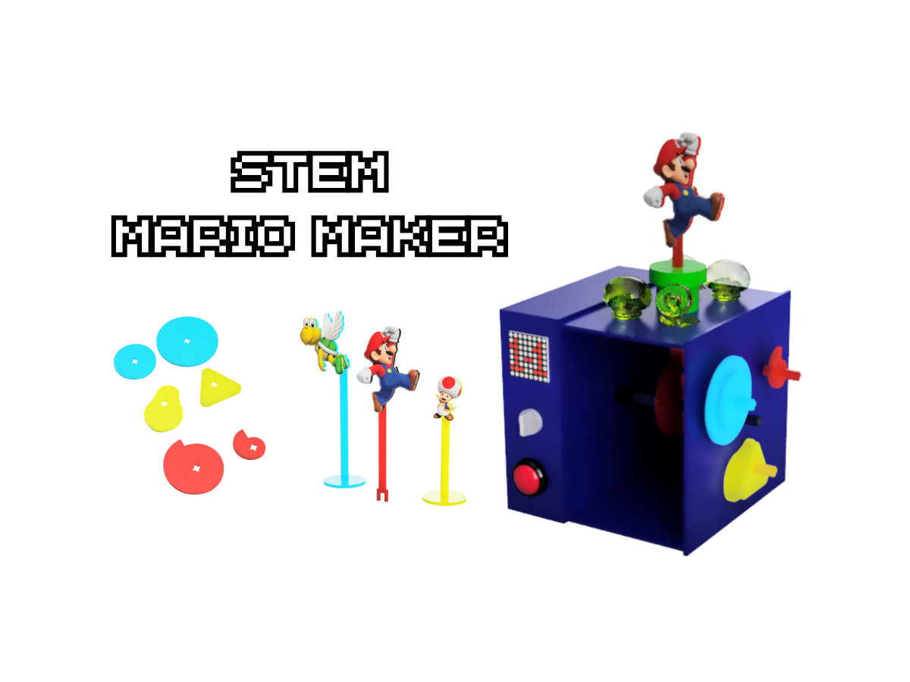

Human-Centered Approach
Inclusive & Universal Design
Creating experiences that prioritize accessibility, sensory diversity, and equitable interaction for all users.

Multisensory • Accessibility
Jardín Mate-mágico: Sensory Learning
Designing for diverse cognitive and motor abilities in early childhood education (ages 4-7).

Affordances • Cognitive Design
Inclusive Gamification
How game mechanics were adapted to ensure clear feedback and intuitive interaction patterns.